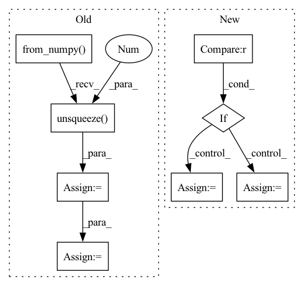

Pattern ID :11829

Before Change
mask = (mask > 0) * 1
image = torch.from_numpy(image).unsqueeze(0).to(device)
mask = torch.from_numpy(mask).unsqueeze(0).to(device)
inpainted_image = self.model(image, mask)
cur_res = inpainted_image[0].permute(1, 2, 0).detach().cpu().numpy()
cur_res = cur_res[0:origin_height, 0:origin_width, :]
cur_res = np.clip(cur_res * 255, 0, 255).astype("uint8")
cur_res = cv2.cvtColor(cur_res, cv2.COLOR_BGR2RGB)
return cur_res
After Change
return: BGR IMAGE
area = image.shape[1] * image.shape[2]
if area < self.crop_trigger_size[0] * self.crop_trigger_size[1]:
return self._run(image, mask)
print("Trigger crop image")
boxes = boxes_from_mask(mask)
crop_result = []
for box in boxes:
crop_image, crop_box = self._run_box(image, mask, box)
crop_result.append((crop_image, crop_box))
image = (image.transpose(1, 2, 0) * 255).astype(np.uint8)[:, :, ::-1]
for crop_image, crop_box in crop_result:
x1, y1, x2, y2 = crop_box
image[y1:y2, x1:x2, :] = crop_image
return image
In pattern: SUPERPATTERN
Frequency: 3
Non-data size: 8
Instances
Fragment ID: 39793759
Project Name: sanster/lama-cleaner
Commit Name: 43c9c22c7312dd39feac4e3783e9ec080fd64243
Time: 2022-03-22
Author: cwq1913@gmail.com
File Name: lama_cleaner/lama/__init__.py
M Class Name: LaMa
N Class Name: LaMa
M Method Name: __call__(3)
N Method Name: __call__(3)
M Parent Class:
N Parent Class:
M File Name: lama_cleaner/lama/__init__.py
N File Name: lama_cleaner/lama/__init__.py
M Start Line: 40
M End Line: 55
N Start Line: 50
N End Line: 65
'>
Before Change
else:
audio = audio_path
feats = self.proc.process_audio(audio).T
feats = torch.from_numpy(feats)
feats = feats.unsqueeze(0)
preds = self.model(feats)[0] // extracting the activations by passing the feature through the NN
preds = self.model.final_pred(preds)
preds = preds.detach().numpy()
preds = np.transpose(preds[:2, :])
After Change
def process(self, audio_path, inference_model, plot = False):
if inference_model == "PF": // instantiating a Particle Filter decoder - Is Chosen for online inference
self.estimator = particle_filter_cascade(beats_per_bar=[], fps=50, plot=plot)
elif inference_model == "DBN": // instantiating an HMM decoder - Is chosen for offline inference
self.estimator = DBNDownBeatTrackingProcessor(beats_per_bar=[2, 3, 4], fps=50)
else:
raise RuntimeError("inference_model can be either "PF" or "DBN"")
preds = self.activation_extractor(audio_path)
'>
Fragment ID: 39793715
Project Name: mjhydri/beatnet
Commit Name: 0fb33177b8fcafe2daff996b597bcb04eeb71a15
Time: 2021-10-29
Author: mj.hydri@gmail.com
File Name: src/BeatNet/BeatNet.py
M Class Name: BeatNet
N Class Name: BeatNet
M Method Name: process(4)
N Method Name: process(2)
M Parent Class:
N Parent Class:
M File Name: src/BeatNet/BeatNet.py
N File Name: src/BeatNet/BeatNet.py
M Start Line: 47
M End Line: 71
N Start Line: 39
N End Line: 51
'>
Before Change
for i in range(x.size(0)):
mask = Masks.get_ff_mask(height, width)
mask_all.append(mask)
mask = torch.from_numpy(np.asarray(mask_all)).unsqueeze(1).float()
ones = torch.ones(x.size(0), 1, x.size(2), x.size(3))
mask = ones * mask
if x.is_cuda:
mask = mask.cuda()
result = x * (1. - mask)
After Change
if x.is_cuda:
mask = mask.cuda()
if config["mask_type"] == "hole":
result = x * (1. - mask)
elif config["mask_type"] == "mosaic":
// TODO: Matching the mosaic patch size and the mask size
mosaic_unit_size = config["mosaic_unit_size"]
downsampled_image = F.interpolate(x, scale_factor=1. / mosaic_unit_size, mode="nearest")
upsampled_image = F.interpolate(downsampled_image, size=(height, width), mode="nearest")
result = upsampled_image * mask + x * (1. - mask)
else:
raise NotImplementedError("Not implemented mask type.")
'>
Fragment ID: 39793745
Project Name: sayednadim/global-and-local-attention-based-free-form-image-inpainting
Commit Name: aaa17ed332dc95db0f5900a43be179e26569b50c
Time: 2020-08-16
Author: smnadimuddin@gmail.com
File Name: model/mask.py
M Class Name: AnonimousClass
N Class Name: AnonimousClass
M Method Name: mask_image(2)
N Method Name: mask_image(2)
M Parent Class:
N Parent Class:
M File Name: model/mask.py
N File Name: model/mask.py
M Start Line: 40
M End Line: 49
N Start Line: 56
N End Line: 72